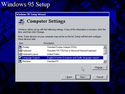
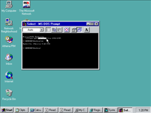

Windows 95Windows 95 – самая разрекламированная версия Windows, призванная "поторопить" всех с переходом на платформу Win32. Обеспечивая максимальную совместимость с DOS и Windows 3.1x, она одновременно позволяла запускать некоторые из программ для Windows NT. |
|||
Windows 95 (first release)первая из многих выпущенных версий Windows 95; особенность в том, что отказывается устанавливаться без ключевых дискет, что вызвало ряд проблем в VMWare | |
Установка: приглашение |
/setup-welcome_pv.png) |
Windows 95 – первая из коммерческих версий Windows, которая для установки требовала согласие с лицензией и серийный номер |
/setup-welcome-1_pv.png) |
/setup-welcome-2_pv.png) | |
/setup-welcome-3_pv.png) | |
Установка: выбор каталога |
/setup-directory_pv.png) |
Установка: информация о пользователесерийный номер запрашивается на отдельной странице |
/setup-branding_pv.png) |
Установка: копирование файлов |
/setup-progress_pv.png) |
даже при установке на совершенно чистую машину полминуты уходит на "поиск установленных компонентов" и "поиск свободного места на диске" |
/setup-progress-1_pv.png) |
установку Windows 95 можно было отменить; более того, можно было выбрать в загрузочном меню пункт "предыдущая версия MS-DOS" |
/setup-progress-2_pv.png) |
/setup-progress-3_pv.png) | |
/setup-progress-4_pv.png) | |
эта версия Windows 95 выделяет на карте цветом выбранный часовой пояс |
/setup-progress-5_pv.png) |
Установка: готовоУстановка, как обычно, включает перезагрузку. Это сообщение выдаётся перед перезагрузкой... |
/setup-done_pv.png) |
...а это – после, при окончательном завершении установки. |
/setup-done-1_pv.png) |
Картинка при загрузкевпервые – знаменитые облака |
/welcome_pv.png) |
Первый запускдля тех, кто ещё не слышал о кнопке Пуск из обильной рекламы, Windows 95 обращает на неё внимание |
/firstboot_pv.png) |
/firstboot-1_pv.png) | |
Панель управления |
/controlpanel_pv.png) |
Оформление |
/appearance_pv.png) |
Язык и стандарты |
/regional_pv.png) |
Свойства системы |
/system_pv.png) |
О системеwinver больше не выводит номер версии Windows |
/about_pv.png) |
Выход из системы |
/logout_pv.png) |
Завершение работы |
/shutdown_pv.png) |
/shutdown-1_pv.png) | |
Буфер обменаК моему большому удивлению, при установке Windows 95 невозможно было установить просмотрщик буфера обмена; однако, его можно установить позже в приложении панели управления "Установка и удаление программ". |
/clipbrd_pv.png) |
Часычасов и календаря больше нет как отдельных приложений; вместо этого используется окно настройки даты и времени |
/clock_pv.png) |
Калькуляторинтерфейс калькулятора заметно изменился: кнопки стали прямоугольные и серые, надписи на них – разноцветные |
/calc_pv.png) |
Блокнот |
/notepad_pv.png) |
Диалог выбора файлаполностью новый диалог выбора файла: файлы и папки перечислены в общем списке |
/filedlg_pv.png) |
Текстовый редактор |
/write_pv.png) |
Диалог выбора шрифтаобразец текста заметно уменьшен в размере; кроме того, добавилна возможность выбора кодировки |
/fontdlg_pv.png) |
Файловый менеджер |
/fileman_pv.png) |
Разрешения доступа |
/security_pv.png) |
Главное меню |
/explorer_pv.png) |
/explorer-1_pv.png) | |
Вход в системупри входе в сеть Microsoft Network, в отличие от бета-версии, уже нельзя выбрать рабочую группу |
/login_pv.png) |
При установке Windows 95, так же как и Windows NT, предлагает создать учётную запись прользователя. При этом, если не задать вновь созданному пользователю пароль, то показанное выше окно входа в систему не будет появляться. |
/login-1_pv.png) |
Вход в сеть |
/netlogin_pv.png) |
Подключение сетевого диска |
/connect_pv.png) |
/connect-1_pv.png) | |
Редактор PIF |
/pifedit_pv.png) |
/pifedit-1_pv.png) | |
/pifedit-2_pv.png) | |
/pifedit-3_pv.png) | |
Редактор настроек |
/regedit_pv.png) |
редактируется уже 6 файлов: к стандартным 4 добавлены PROTOCOL.INI и MSMAIL.INI |
/regedit-1_pv.png) |
Диалог запуска программы |
/rundlg_pv.png) |
Командная строкапочему-то по умолчанию окно командной строки очень маленькое |
/cmd_pv.png) |
Панель инструментов теперь показана по умолчанию. Обратите внимание на замену слова "Back" значком. |
/cmd-1_pv.png) |
Графический редактор |
/paint_pv.png) |
Терминалв Гипертерминале заранее настроены три соединения – с AT&T, CompuServe и MCI |
/terminal_pv.png) |
ИграСапёр чуть-чуть изменился – границы ячеек стали темнее и тоньше. В более поздних версиях Windows старые границы ячеек будут возвращены. |
/game_pv.png) |
/game-1_pv.png) | |
/game-2_pv.png) | |
/game-3_pv.png) | |
Справкакроме оглавления из тем-книжечек, справка Windows 95 включает возможность полнотекстного поиска |
/help_pv.png) |
Элементы управления окномпоскольку Windows 95 не содержала просмотрщик папки обмена, то элементы MDI-интерфейса показаны на примере Диспетчера Файлов, сохранённого для удобства пользователей Windows 3.x |
/maximized_pv.png) |
/maximized-1_pv.png) | |
Диспетчер задач |
/taskman_pv.png) |
Ctrl-Alt-Del |
/cad_pv.png) |
NashvilleNashville – это бета-версия так и не выпущенной ОС под названием "Windows 96". Обновления интерфейса, отличающие её от обычной Windows 95, частично вошли в Windows 98, частично – в Windows XP, некоторые – до сих пор ждут своего часа. | |
Установка: приглашениеNashville можно установить только как обновление на уже установленную Windows 95 |
 |
Windows 95 предлагает сохранить старые системные файлы для возможности отмены её установки |
|
Установка: копирование файловпри обновлении предыдущей версии Windows 95 предлагает изменить её установки |
 |
Первый запускNashville предлагает тур по Windows, как CD-версии Windows 95, – при том, что весь её дистрибутив занимает 19 дискет! |
|
Свойства системыОбратите внимание на номер версии Nashville: 4.10, как и у Windows 98, но номер сборки – только 999, меньше чем у Windows 95 OSR2 (4.00.1111) версия настоящей Windows 98 – 4.10.1998 серийный номер не требуется, т.к. Nashville – это бета-версия; также очень своеобразно распознался мой виртуальный Celeron %-) |
|
Разрешения доступа |
|
Главное менютаблица символов, почему-то отсутствующая в обычной Windows 95, вновь появилась в Nashville |
|
Вход в системув отличие от обычной Windows 95, Nashville не перестаёт предупреждать о последствиях задания пустого пароля |
|
Вход в сеть |
|
Подключение сетевого дискакак и многие другие элементы управления, меню подсвечивается при наведении мыши |
|
Командная строкатолько командная строка Nashville отображает её кодовое название; во всех остальных местах эта ОС называет себя Windows 95 |
 |
то же самое крупным планом |
|
КалендарьНовое приложение в Nashville – Athena – представляет собой органайзер, отчасти пришедший на замену WinPad-у бета-версий Windows 95, но с поддержкой электронной почты и списка контактов. Согласно распространённому в Интернете списку кодовых названий Microsoft, Athena превратилась в Outlook Express, однако я не вижу между ними большой связи. Athena входила в Nashville наряду со стандартным почтовым клиентом Windows 95 – MS Exchange – и они даже использовали общие папки для писем. |
|
Справкаодно из проявлений нового интерфейса Nashville – подсветка пункта, на который наведена мышь |
|
Элементы управления окном |
|
новый интерфейс Nashville: если навести мышь на элемент, он подсвечивается; если задержать мышь над элементом, он выделяется, и всплывает подсказка |
|
нововведения Nashville относятся и к привычным элементам управления: так, элементы управления окном подсвечиваются при наведении мыши; один или оба направляющих полосы прокрутки подсвечиваются при наведении мыши на любую её часть; выпадение меню сопровождается анимацией |
|
даже подписи вкладок подсвечиваются при наведении на них мыши кроме того, в этой версии Windows впервые применено подчёркивание как элемент GUI |
|
Windows 95 OSR2Windows 95 OSR2 (OEM Service Release) – самый распространённый, хотя не самый последний, выпуск Windows 95. В него включены различные исправления, поддержка FAT32 и новых устройств, Internet Explorer 3.0 и т.д. Как ясно из их названия, Windows 95 OSRx выпускались только для предустановки на новые компьютеры. | |
Установка: копирование файловпроцесс установки Windows 95 OSR2 не отличается от установки предыдущих выпусков Windows 95 |
 |
 | |
 | |
 | |
 | |
подсветки выбранного часового пояса больше нет |
 |
Картинка при загрузкеВключение Internet Explorer в состав Windows 95 OSRx вызвало, если вы помните, множество споров. Итогом споров стало удаление надписи "Microsoft Internet Explorer" с экрана загрузки последующих версий Windows. |
 |
Первый запускпри первом запуске Windows 95 в VMWare загружается обычный 16-цветный видеорежим |
 |
так выглядит Windows 95 в полноцветном видеорежиме |
 |
Панель управленияВидеодрайверы для использования в VMWare полноцветных видеорежимов входят в состав пакета утилит "VMware Tools". Одна из неотключаемых функций этого пакета – скрытие указателя мыши при получении скриншота. Поэтому на всех скриншотах Windows 95 OSR2 не виден указатель мыши. |
 |
Оформление |
 |
Язык и стандарты |
 |
Свойства системыВместо истинного номера версии Windows 95 OSR2 – 4.00.1111 – окно свойств системы отображает 4.00.950B. Остальные версии Windows 95 OSRx также отображались как 4.00.950x, невзирая на их истинный номер версии. |
 |
О системе |
 |
Выход из системы |
 |
Завершение работы |
 |
 | |
Буфер обмена |
 |
Часы |
 |
Калькулятор |
 |
Блокнот |
 |
Диалог выбора файла |
 |
Текстовый редактор |
 |
Диалог выбора шрифта |
 |
Файловый менеджер |
 |
Разрешения доступа |
 |
Главное меню |
 |
 | |
Вход в системуWindows 95 OSR2, как и Nashville, не перестаёт напоминать о последствиях использования пустого пароля |
 |
Вход в сеть |
 |
Подключение сетевого диска |
 |
 | |
Редактор PIF |
 |
 | |
 | |
 | |
Редактор настроеквозможности Редактора реестра вновь расширились: в меню добавился пункт "Копировать имя раздела" |
 |
системных файлов вновь 5, как и в бета-версиях Windows 95: MSMAIL.INI из них исключён |
 |
Диалог запуска программы |
 |
Командная строкакомандная строка отображает правильный номер версии Windows 95 OSR2 – 4.00.1111 |
 |
 | |
Графический редакторкак вы помните, в 16-цветном видеорежиме эта картинка выглядела как отвратительная серо-белая масса |
 |
Терминал |
 |
Игра |
 |
Не знаю, почему – может, из-за недостаточно стабильных видеодрайверов VMWare? – но пасьянс "Косынка" в этой версии Windows при попытке запуска неизменно выдавал вот эту ошибку. |
 |
 | |
 | |
Справкаодин только список нововведений в справке Windows 95 OSR2 занимает две страницы |
 |
Элементы управления окном |
 |
 | |
Диспетчер задач |
 |
Ctrl-Alt-Del |
 |